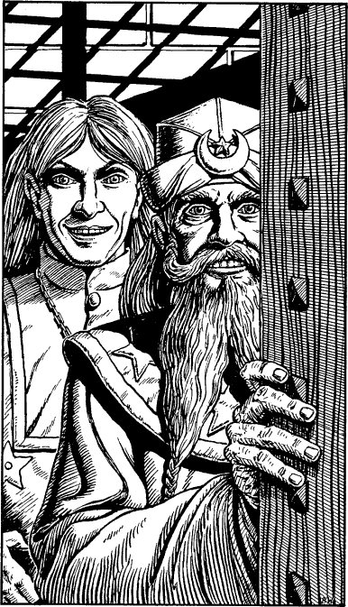

75
It is a grand building of polished red stone set with small, diamond-paned windows. You pass beneath its arched gateway and climb the tiled steps that lead to the front door. Twice you rap the twisted iron knocker and wait expectantly for the portal to creak slowly open. Minutes later, it swings back to reveal two men standing in the doorway. One is the grey-haired, aristocratic figure of Chiban; the other, to your utter astonishment, is your companion Banedon.

‘Lone Wolf!’ says the young magician, his voice filled with surprise and delight. ‘You’re free, but how?’
‘I could ask the same of you, Banedon,’ you reply, with a smile.
‘I heard of my former pupil’s arrest and made arrangements for his release. We were discussing how to secure your freedom, but it would appear that such plans are now unnecessary,’ explains the aged Chiban, gently closing the great oak door. He turns his kindly gaze to you and says, ‘I am honoured to meet you, Kai Lord. Banedon has told me of your quest. I have knowledge of that which you seek and I shall aid you all I can so that you may recover it.’
The master magician beckons you both to follow him to his study. The room is filled with massive wooden racks of books and papers, and at its centre a large circular table stands completely covered with the implements of his magical researches. He clears a space amid this clutter and motions you to sit. ‘You must both be famished after your journey and your ordeal. Come, eat and enjoy.’
For a few seconds a shimmering pool of light fills the space; then it fades, leaving a sumptuous meal in its wake. If you have lost any ENDURANCE points on your adventure so far, you may now restore 3 points as you consume the delicious food.